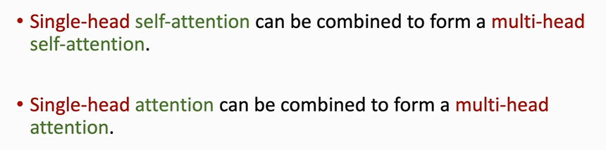

前文回顾：https://fx0809.gitee.io/2021/06/11/NLP%E6%9E%81%E7%AE%80%E5%85%A5%E9%97%A8%E7%AC%94%E8%AE%B0/
一、Revisiting Attention for RNN
Attention for Seq2Seq Model，它的编码器和解码器都是RNN结构：
其中$\alpha$的计算公式如下：

在Transformer中，就采用了下面的方法计算Context vector：
二、Attention without RNN
现在，剥离RNN，只保留Attention。
以英语到德语的翻译为例：
开始计算权重$\alpha$：
计算$\alpha_{:1}$
计算$c_{:1}$
计算$\alpha_{:2}$
计算$c_{:2}$
重复以上操作，最终得到全部的$c$，即Context vector
这些Context vector就是最后的输出
每一个$c_{:j}$，都依赖于全部的$x$，即$x_1$到$x_m$，以及一个$x_j’$。因此Attention不会像RNN那样产生遗忘（RNN只用到了编码器的最后一个隐状态$h_m$，因此不能看到所有的英语输入，会产生遗忘）。
举个例子，比如想把英语翻译成德语，可以把m个英语单词输入编码器，然后用解码器依次产生德语单词。比如，此时的$c_{:2}$可以看到所有输入的m个英语单词以及当前输入的德语单词$x_2’$。将$c_{:2}$输入分类器得到概率分布，从中抽样得到下一个预测的单词$x_3’$，并将其作为下一次的解码器输入。下图展示了这一过程：
注意：在RNN中，最终的输出是隐状态向量$h$，而这里Attention层的输出是$C$。
Attention层总结如下：
三、Self-Attention without RNN
Self-Attention层只有一个输入序列$X={x_1,x_2,…,x_M}$
注意，$C_i$并非只依赖于$x_i$，而是依赖于所有的$X$.
下面看一下C的计算过程
首先将$x_i$映射到$q_{:i},k_{:i},v_{:i}$
接着计算$\alpha_{:j}$
总共可以得到m个$\alpha$向量，每个向量都是m维的
现在计算Context vector
计算$c_1$，它依赖于$\alpha_{:1}$和m个m维向量$v$
计算$c_2$，它依赖于$\alpha_{:2}$和m个m维向量$v$
同理，总共可得到m个c向量
于是，Self-Attention层的最终输出是$C={c_{:1},c_{:2},…,c_{:m}}$
总结一下：
四、Single-Head与Multi-head
上一节所讲的Self-Attention是单头的
用$l$个单头Self-Attention就能组成一个多头Self-Attention
每一个单头的Self-Attention的输入都是相同的，但是它们都有自己的参数矩阵，因此输出的C是不同的。
将每一个单头Self-Attention的输出($d*m$)concat在一起，就得到了一个更长的向量( $(ld)*m$)。如下图所示
上面构造了多头Self-Attention，对于Attention，同理可利用多个Attention构造出多头Attention。
至此，我们已经有了多头Self-Attention和多头Attention，现在，利用它们来搭建一个深度神经网络：Transformer
五、搭建Transformer
Transformer是一个Seq2Seq模型，包含编码器和解码器两部分。
首先来搭建编码器。
编码器的输入是$x_1$到$x_m$，经过多头Self-attention层得到$c_{:1}$到$c_{:m}$，再将这些c向量经过全连接层，就得到了u向量。
注意，这里的全连接层的权重系数$W_u$是共享的。
每个$u_i$对应一个$x_i$，但是每个$u_i$依赖于所有的$X={x_1,x_2,…,x_m}$。
上面的结构总共包含两层：Self-Attention层+全连接层。
把这两层看成一个Block，假设词向量维度是512，则Block的输入和输出都是$512*m$，它表示一共有m个词，每个词都是512维的向量。
堆叠6个这样的Block，配合跳连技巧，就得到了Transformer的编码器
注意，虽然这六个Block的结构一样，但是它们之间不共享参数。
现在来搭建解码器。
解码器有三层，如下图所示
其中，多头Attention层的输入包含两部分（因为前面讲过，Attention层是类似Seq2Seq架构的）：一部分是前面我们已经搭建好的编码器的输出$u_{:1},…,u_{:m}$，另一部分是当前已经生成的t个单词的词向量$x_1’,…,x_t’$喂入多头Self-Attention得到的输出$c_{:1},…,c_{:m}$。
还有，最后经过的全连接层的权重系数$W_s$也是共享的，即：$s_{:j}=W_s z_{:j},j=1,2,…,t$.
把上面的结构看成一个整体Block（对于左下方的Encoder，不包含结构，只包含它的输出$u_{:1},…,u_{:m}$）
堆叠6个这样的Block，配合跳连技巧，就得到了Transformer的解码器。
现在已经有了编码器和解码器，将它们组合在一起，就能得到Transformer了。
RNN Seq2Seq Model与Transformer的输入都是$x_1,…,x_m$以及$x_1’,…,x_t’$，输出都是t个m维的向量，因此可以直接用Transformer替换以前的RNN。
最后，总结一下这两个小节的内容：


六、ViT
将Transformer的编码器作为图片特征提取器，就得到了ViT。
切图，得到多个图片patch
将图片patch展平成向量
然后经过一个共享参数的全连接层
还要加上位置编码信息
具体地，将之前的绿色向量$x_1,x_2,…,x_n$与这里的位置编码得到的红色曲线向量加在一起
这里的位置编码方式有很多，但实验效果都几乎差不多，因此上面就采用了较简洁的方式做位置编码。
此时，输出的$z_1,…,z_2,…,z_n$既包含内容信息，也包含位置信息。
此外，用CLS符号表示分类，将CLS做Embedding，得到$z_0$向量，$z_0$跟其它的$z$向量大小相同。
将$z_0，z_1，…，z_n$这$n+1$个向量经过一个Transformer的Encoder，得到$n+1$个向量：$c_0，c_1，…，c_n$。

即：
其中$c_1，c_2，…，c_n$没用到，因此可以忽略。
$c_0$便是提取得到的图片特征，将其输入分类器，得到分类结果的概率分布$p$。
将$p$与真实类别标签之间求损失(比如交叉熵)，反向传播更新网络参数，就完成了训练。
注意，虽然$c_0$只对应于CLS，但是它包含了CLS与$x_1，…，x_2，…，x_n$的信息，因此能够捕获图像的特征。


- 本文链接：http://yoursite.com/2021/06/25/Transformer%E5%88%B0%E5%BA%95%E6%98%AF%E4%BB%80%E4%B9%88/
- 版权声明：本博客所有文章除特别声明外，均默认采用 许可协议。